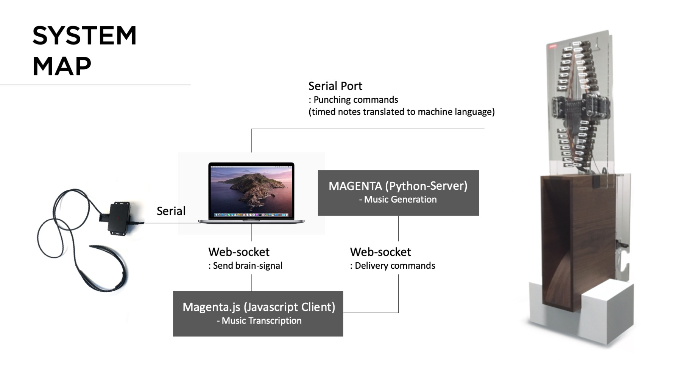
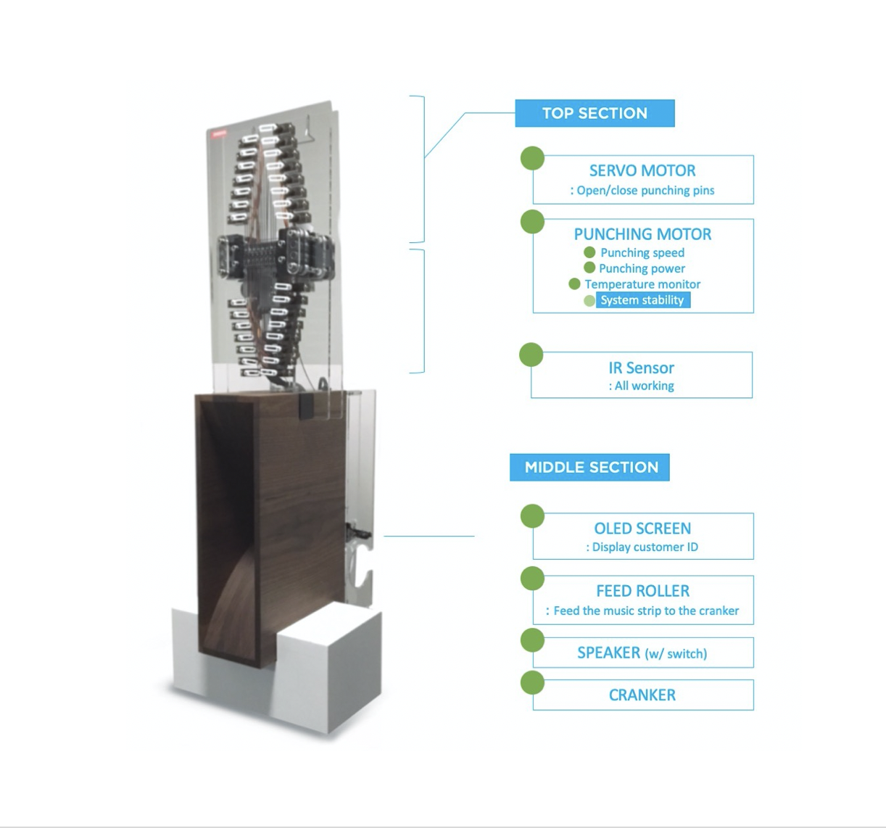

>Self-balancing robot
- Oct, 2019
This post describes the detailed development procedure of Brain Composer project.
Music Generation (Server)
Environment : MacOS (Python - Flask) / Magenta (Python) For music style transfer, I used Magenta's Music Style transfer engine written in python. (I've always wanted to explored Magenta for so long...!) and had to make a server that interfaces main visualization page with AI core. Of course, the best scenario is to use client side only for "cleaner" exprerience, but I had to stick to python server as the Polyphony RNN is not deployed in javascript yet.
Resource : How to build a web application using Flask and deploy it to the cloud Pre-trained model : Magenta - Polyphony RNN trained on Bach's music data
Music Generation (Client)
Environment : Magenta.js / Anime.js Google recently introduced Magenta.js, letting developers to easily make an web-based interface with Magenta backend.Numerous collective examples can be found from here. I specifically used Onsets and Frames to transcribe played midi input into music notes, and mm.Player for the playback. The brain signals (8 raw signals read from the device) hits the hidden web-midi piano in the webcanvas, and the resulting midi signals are transcribed accordingly. The transcribed signals then function as a motif-melody line for the music generation.
References : Hum-2-Song, an AI-powered web application that is able to compose the musical accompaniment of a melody produced by a human voice.
Brain Interface (Connected to Client)
Environment : Web (Javascipt : P5.js) I was very much inspired by this video clip of two guys playing Nerosky's Mindflex. As the meditiation level rises, the levitated ball drifts more towards the another person's side :)
There was an easy H/W hack tutorial to connect this device to ardino with serial port, and I used this H/W circuit for the installation and redesigned the whole shape. The brain reading part was also included in the libray but was written in Processing. I later translated this into P5.js code (most of the codes are compatible to each other and was easy to implement in the web environment).
Punching Machine
This was the most challenging part of the whole development process. The initial machine was inspired from Music Box Hole Punching Machine by Josh Sheldon. However, we had to redesign the machine completely so as to decrease the punching time dramatically for the whole user experience. (We aimed to make the whole experience of the installation taking below 2 minutes in total.)